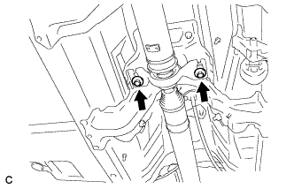
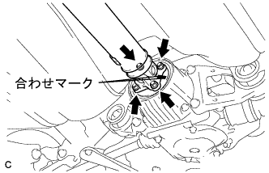

Propeller Shaft with Center Bearing Assembly (4WD) Removal |
| 1. Remove Exhaust Pipe Assembly Center |
 |
Remove the 2 bolts and 2 compression springs.
 |
Remove the 2 bolts.
Disconnect the 3 exhaust pipe supports and remove the exhaust center pipe assembly.
Remove the 2 gaskets.
| 2. Remove Front Floor Heat Insulator NO.2 |
 |
Remove the 4 nuts and remove the front floor heat insulator No.2.
| 3. Remove Propeller Shaft with Center Bearing Assembly |
 |
Remove the 2 bolts and center bearing washers, and disconnect the propeller with center bearing shaft assembly.
 |
Put matchmarks on the differential carrier assembly and propeller shaft assembly.
Remove the 4 nuts and 4 washers, and disconnect the propeller shaft assembly from the differential carrier assembly.
 |
Put matchmarks on the transfer assembly and propeller shaft assembly.
Remove the 4 nuts and 4 washers, and disconnect the propeller shaft assembly from the transfer assembly.